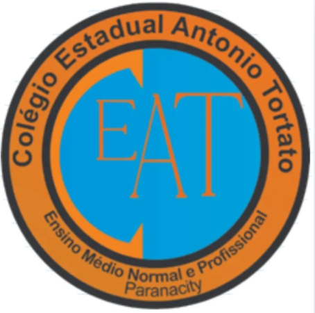

➕ Acessibilidade Visual e Auditiva | Tecnologia Assistiva
Detecção de pedestres · Sinalização sonora · Código aberto
Circuito inteligente desenvolvido pela turma que detecta pedestres via sensor infravermelho, aciona alerta sonoro e sincroniza LEDs para travessia segura. Projeto montado, explicado e discutido em sala de aula, promovendo empatia e inclusão. Esta exposição virtual foi criada pelos alunos para compartilhar com a comunidade escolar.
int vermelho = 10, amarelo = 9, verde = 8, sensorIR = 7, buzzer = 6;
void setup() {
pinMode(vermelho, OUTPUT); pinMode(amarelo, OUTPUT);
pinMode(verde, OUTPUT); pinMode(sensorIR, INPUT); pinMode(buzzer, OUTPUT);
digitalWrite(verde, HIGH);
}
void loop() {
if(digitalRead(sensorIR) == HIGH) {
for(int i=0;i<3;i++) { tone(buzzer,1000); delay(200); noTone(buzzer); delay(150); }
digitalWrite(verde, LOW); digitalWrite(amarelo, HIGH); delay(2000);
digitalWrite(amarelo, LOW); digitalWrite(vermelho, HIGH);
tone(buzzer, 1500); delay(5000); noTone(buzzer);
digitalWrite(vermelho, LOW); digitalWrite(verde, HIGH);
}
delay(50);
}
Inclusão garantida: Padrões sonoros distintos guiam pessoas com deficiência visual.
Movimento, velocidade média, rampas acessíveis e máquinas simples (alavancas) no esporte paralímpico.
Lógica do semáforo, engenharia de prompt para código otimizado, análise de dados de mobilidade.
Montagem do sensor IR, LEDs e buzzer, prototipagem e calibração. Tecnologia assistiva inclusiva.
Clique e veja o ciclo acessível com comandos de voz!